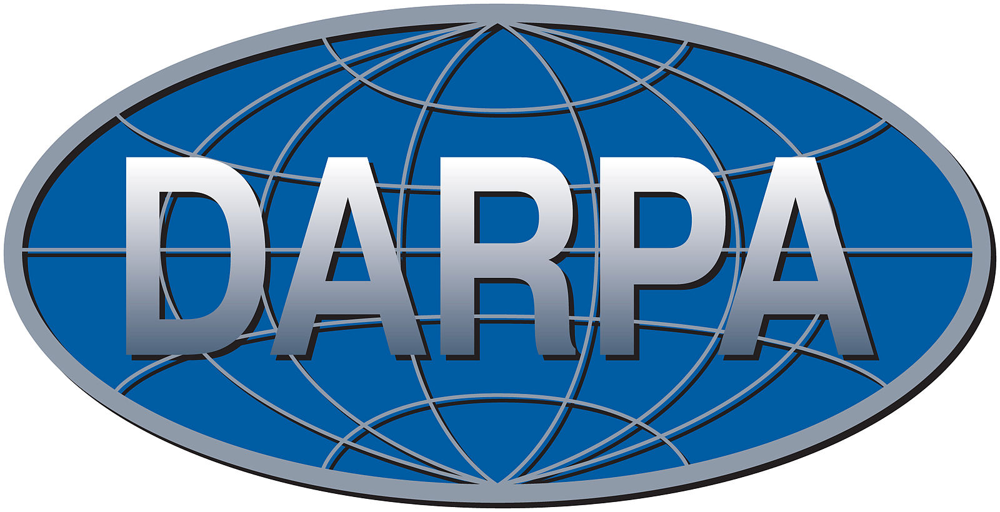
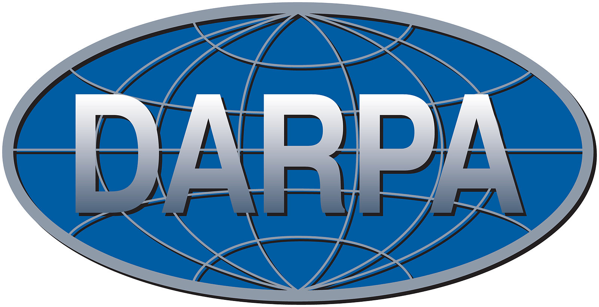
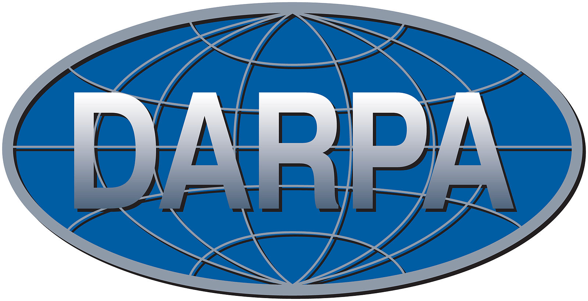
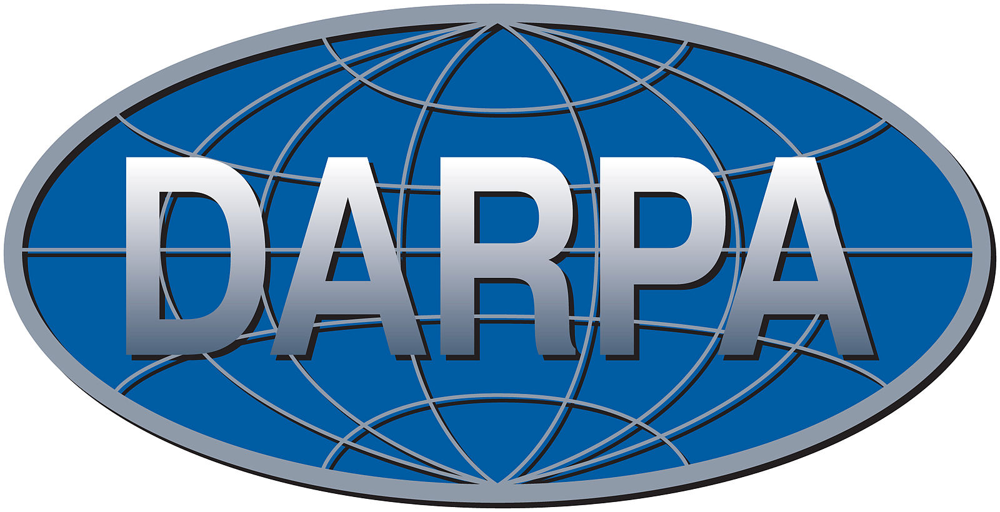
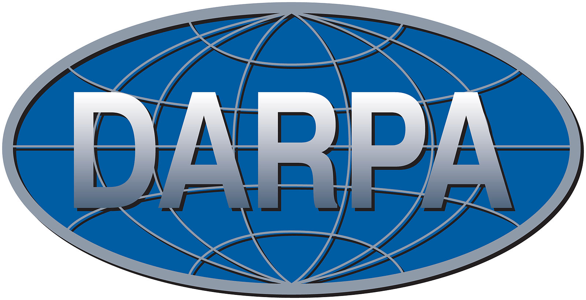

Visar Berisha
About Me
Research
Publications
ResearchGroup
Support
We gratefully acknowledge the following funding agencies, industry research labs, and foundations for making our work possible:

John and Tami Marick Foundation

 

 
